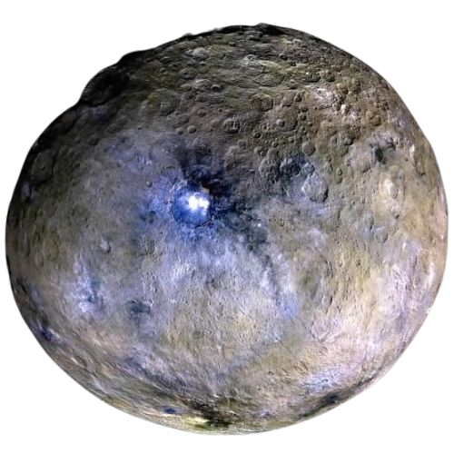
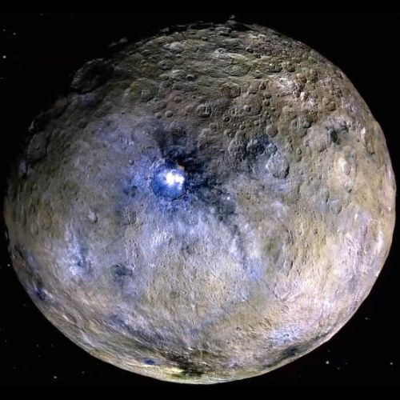
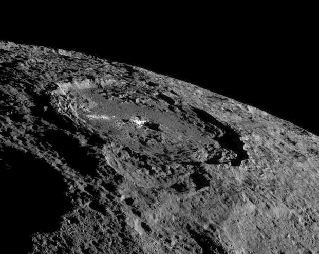
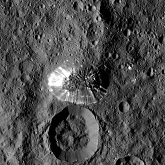

Ceres is the largest object in the Asteroid Belt and the smallest recognized dwarf planet in our Solar System. Rich in water ice and mysterious bright salt deposits, it provides scientists with important clues about planetary formation and the possibility of ancient underground oceans.

The largest body in the Asteroid Belt.
Average distance from the Sun.
A Ceres day lasts just over nine Earth hours.
One journey around the Sun equals 4.61 Earth years.
Only about 3% of Earth's gravity.
Discovered by Giuseppe Piazzi.
Ceres accounts for roughly one-third of the total mass of the Asteroid Belt. Unlike most asteroids, it is nearly spherical because its gravity pulled it into hydrostatic equilibrium, earning it the classification of a dwarf planet in 2006.
Ceres was discovered on 1 January 1801 by the Italian astronomer Giuseppe Piazzi at the Palermo Astronomical Observatory. It was the first object ever discovered in the region now known as the Asteroid Belt. Initially classified as a planet, it was later considered an asteroid before finally being reclassified as a dwarf planet by the International Astronomical Union (IAU) in 2006.
Ceres has a heavily cratered surface mixed with mysterious bright regions, mountains, fractures, and smooth plains. Unlike many asteroids, evidence suggests geological activity continued long after its formation.
Thousands of craters record billions of years of collisions.
Ahuna Mons is believed to be a cryovolcano formed by icy material instead of molten rock.
Highly reflective salt deposits appear inside several craters.
The crust contains significant quantities of water ice mixed with rock.
One of the most remarkable discoveries made by NASA's Dawn spacecraft was the brilliant white deposits inside Occator Crater. These bright regions are composed mainly of sodium carbonate and other salts left behind after salty water reached the surface and evaporated.
Measurements from the Dawn spacecraft suggest that Ceres is internally differentiated, meaning its materials separated into layers during its evolution.
Dense silicate rock forms the center of Ceres.
A thick layer of water ice surrounds the rocky core.
The outer crust contains hydrated minerals, salts, and frozen water.
Scientists believe pockets of salty liquid may still exist beneath the surface.
Ceres is one of the most water-rich bodies in the inner Solar System. Data from the Dawn mission indicates that enormous quantities of water ice exist beneath its surface, and evidence suggests an ancient underground ocean may have existed for millions of years.
Large amounts of frozen water lie beneath Ceres' dusty surface.
Liquid salty water may still survive deep underground today.
Because water, salts, and internal heat once existed together, Ceres is considered an interesting target in the search for environments that could have supported simple microbial life.
Ceres may contain more fresh water than all of Earth's rivers and lakes combined.
It is the smallest officially recognized dwarf planet in the Solar System.
Its mysterious bright spots were one of Dawn's biggest discoveries.
NASA's Dawn spacecraft became the first mission to orbit a dwarf planet.
NASA's Dawn spacecraft revolutionized our understanding of Ceres. Launched in 2007, it became the first spacecraft to orbit both Vesta and Ceres, revealing a surprisingly active dwarf planet with bright salt deposits, ice-rich crust, and evidence of ancient underground brines.
Dawn launched aboard a Delta II rocket from Cape Canaveral.
Entered orbit around Ceres on March 6, 2015.
Mission concluded after exhausting its hydrazine fuel.
First spacecraft to orbit a dwarf planet.
Dawn transformed Ceres from a mysterious asteroid into one of the Solar System's most fascinating worlds.
The famous bright spots inside Occator Crater were identified as sodium carbonate and other salts left behind by evaporating briny water.
Large amounts of frozen water were discovered beneath the surface, making Ceres one of the most water-rich bodies in the inner Solar System.
Scientists detected organic molecules on the surface, providing clues about the chemistry of primitive Solar System bodies.
Evidence suggests icy volcanoes transported salty material from the interior onto the surface.
Ahuna Mons is Ceres' tallest mountain and one of the most unusual geological features in the Solar System. Rather than forming from molten rock, scientists believe it formed when icy, salty material slowly erupted upward in a process known as cryovolcanism.
One of the tallest mountains on Ceres.
An icy volcano instead of a lava volcano.
Estimated to be only a few hundred million years old.
Strong evidence that Ceres remained geologically active long after its formation.
Ceres follows a nearly circular orbit around the Sun within the Asteroid Belt. Its relatively short rotation period means one day on Ceres lasts only about nine Earth hours.
Although no spacecraft are currently heading toward Ceres, scientists consider it one of the best destinations for future exploration because of its water resources and evidence of ancient subsurface activity.
Scientists hope to return Ceres rocks and salts to Earth for laboratory analysis.
Its abundant water ice could support future robotic and human missions.
Future missions may search for chemical signatures linked to ancient habitable environments.
Ceres may eventually become an important refueling and research station for deep-space exploration.
Ceres discovered by Giuseppe Piazzi.
Officially classified as a dwarf planet by the International Astronomical Union.
NASA launched the Dawn spacecraft.
Dawn entered orbit around Ceres.
Bright salt deposits and cryovolcanic activity confirmed.
Possible robotic sample-return and advanced exploration missions.
Explore some of the most remarkable views of Ceres captured by NASA's Dawn spacecraft and artist impressions based on scientific observations.

A complete view of the dwarf planet showing its heavily cratered surface.

Home to Ceres' mysterious bright salt deposits.

The tallest mountain and likely cryovolcano on Ceres.
Scientists estimate Ceres contains more freshwater than all of Earth's rivers and lakes combined.
Its famous white spots are actually highly reflective salt deposits left behind by ancient briny water.
Ahuna Mons is one of the best examples of cryovolcanism in the Solar System.
Ceres has survived almost unchanged since the birth of the Solar System over 4.5 billion years ago.
The Dawn spacecraft transformed Ceres from a blurry point of light into one of the best-studied dwarf planets.
Ceres contains nearly one-third of the entire Asteroid Belt's total mass.
No. Ceres is officially classified as a dwarf planet by the International Astronomical Union.
Ceres has an extremely thin and temporary exosphere, but it does not have a substantial atmosphere like Earth or Mars.
No evidence of life has been found, but its water, salts, and possible underground brines make it an exciting target for astrobiology.
Future robotic and human missions may one day explore Ceres because of its abundant water ice and scientific importance.
It preserves clues about how planets formed and may help scientists understand where water in the Solar System originated.
No. Ceres has no known natural satellites.